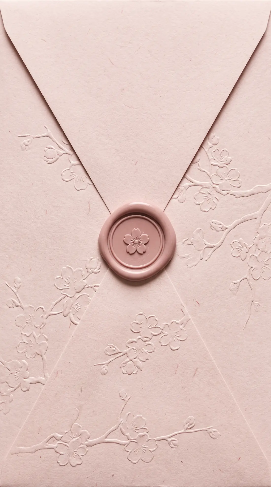
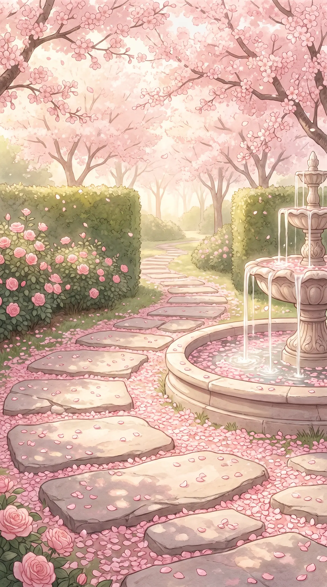
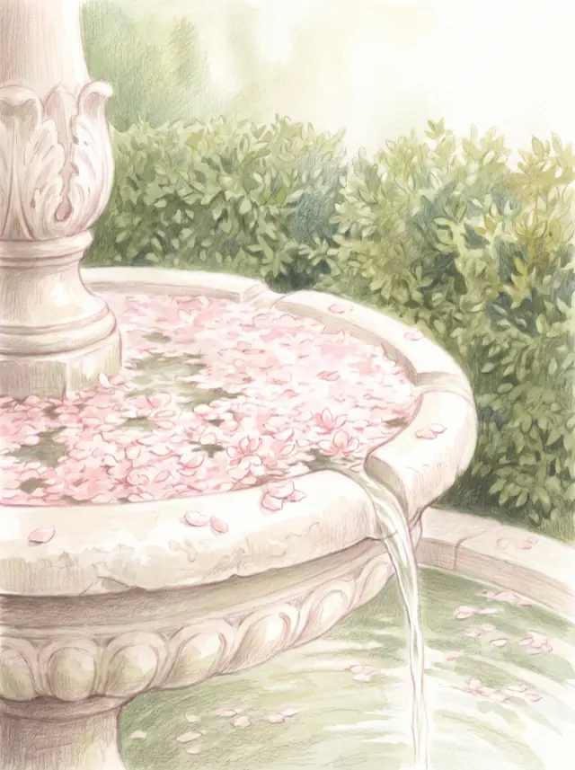
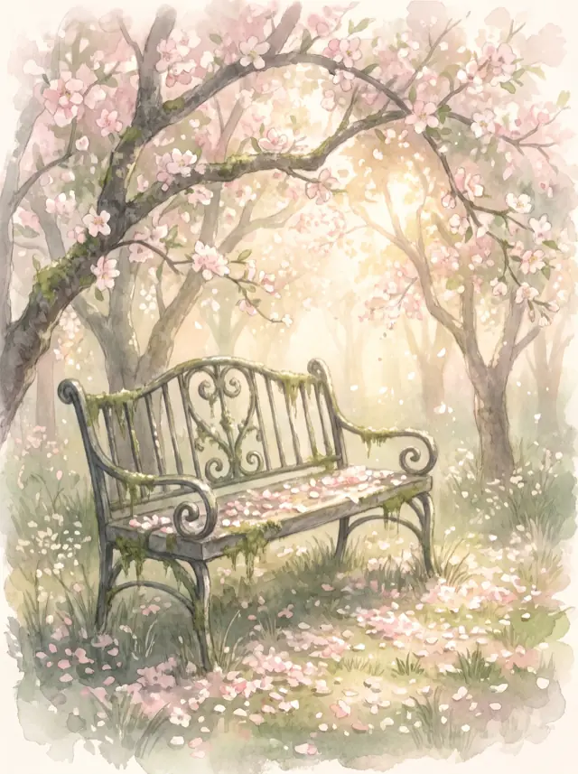
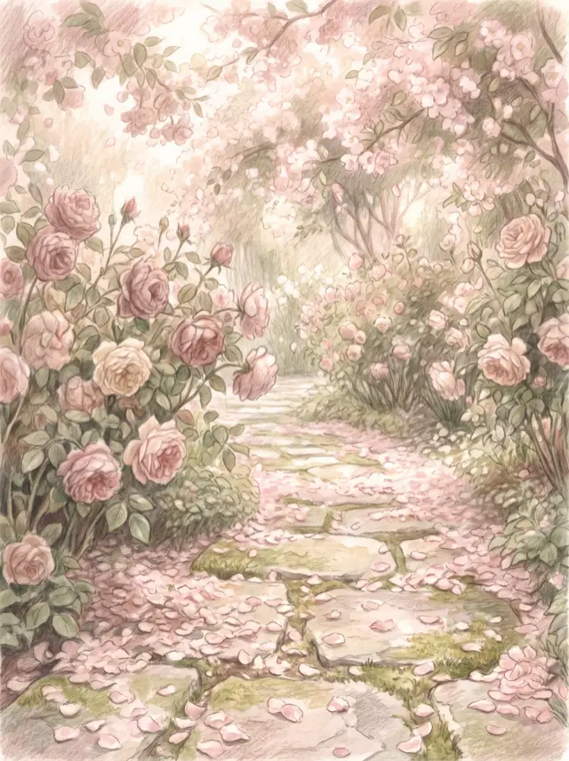

Press the seal

Wir heiraten
22 May 2027
Counting the days
Until the fountain runs.
Today is the day.
Our journey
Nikolas rang the wrong doorbell. Rosa answered. Both claim they knew at once; both are lying.
In a courtyard in Verona, at night, with wet shoes. After that it stopped being coincidence.
A flat with bad light and a good kitchen. It was entirely enough.
We asked each other, in the car, at a red light. It took longer than the light did.
A glimpse of us



What we have prepared for you
In the rose garden. There will be cold vermouth.
By the fountain. Please be on time; it only takes twenty minutes.
On the terrace, while the sun is still on it.
Four courses, Italian, at one long table.
And after that, everyone else.
For everyone still standing.
The taxis are waiting at the gate.
Join us
Everything you need to know.
Ceremony at 4:30 pm
A house with a garden that is completely overgrown by May. The gate looks shut. It is not.
Rosenauer Weg 12
53604 Bad Honnef
One request
Summer festive. The courtyard is cobbled and the terrace is gravel — bring shoes you can also dance in. After sunset it gets properly cool by the water.
We would love to see you
Please reply by 15 March 2027.
The email should have opened. If not: here.
On our own behalf
The cupboards are full and so are the shelves. If you would like to leave something: we are pooling for a trip that has been postponed three times already.
Plan your visit
So your visit is as comfortable as it can be.
On site
Eight rooms
First come, first served
1.5 km
Four stars
Rooms held under "Rosa & Nikolas"
3 km
Small and good
Loud in the morning, honestly
If you are staying on, these places are worth your time:
You asked
If your invitation names a guest, yes — please add them above. Otherwise the courtyard is simply too small.
Until 10 pm, gladly. There is childcare in the garden house and food children actually like.
Please not. Twenty minutes without phones — after that, as much as you like.
Then we marry in the orangery. It is covered, heated and honestly almost nicer.
Tell us early and all is well. We will raise a glass to you anyway.